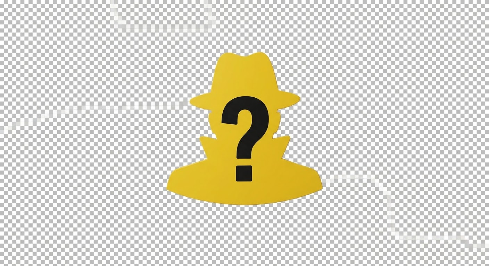

CASO N° 0037MR QUESTION?
PRONTO
FASCICOLO RISERVATO
Il sospetto
è tra voi.
Osserva le risposte. Trova l'intruso.
SOSPETTATI SCHEDATI3 giocatori
3
3–7 SOSPETTATI·PARTITA LOCALE
TURNO 1 / 3PASSA IL FASCICOLO
❋
SOLO PER TE
Il turno di
Dani
Assicurati che nessun altro guardi.
◉ La tua risposta resta segreta
TUTTI HANNO DEPOSTO
Confrontate
le deposizioni.
LA DOMANDA UFFICIALE
VERDETTO POPOLARE
Chi vi
insospettisce?
Indicate chi credete sia l’impostore.
✦
VERDETTO
Beccato.
L’IMPOSTORE ERA